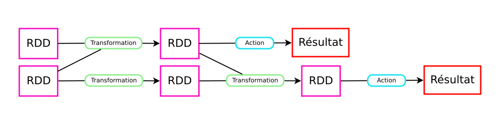
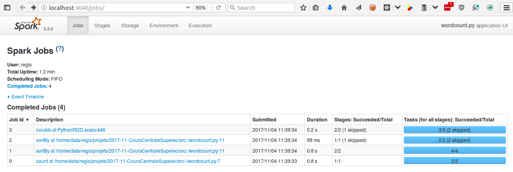
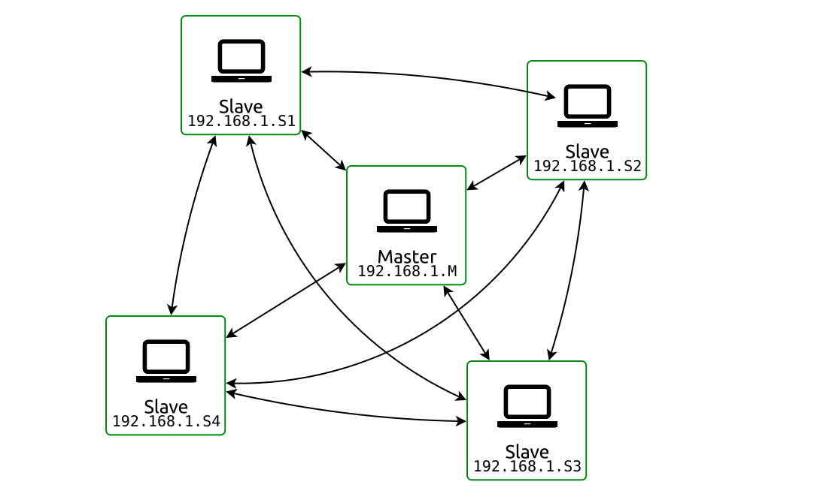
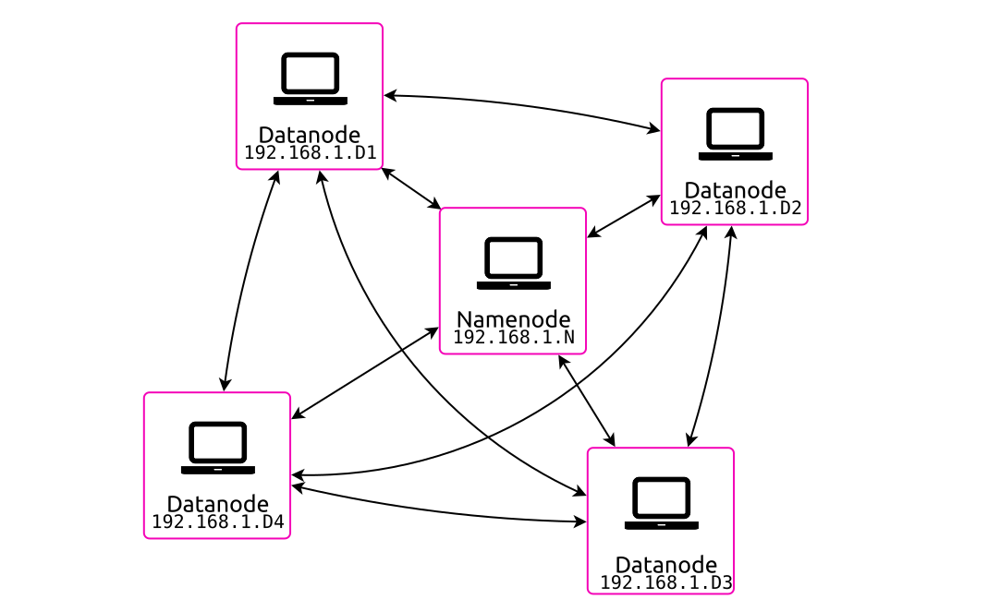
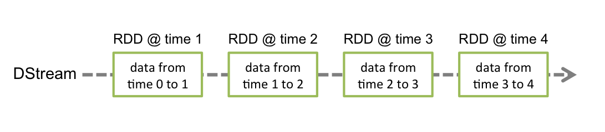
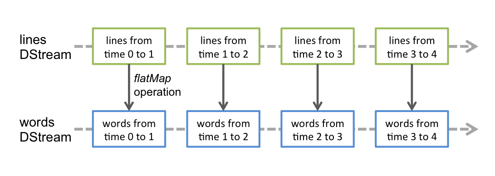
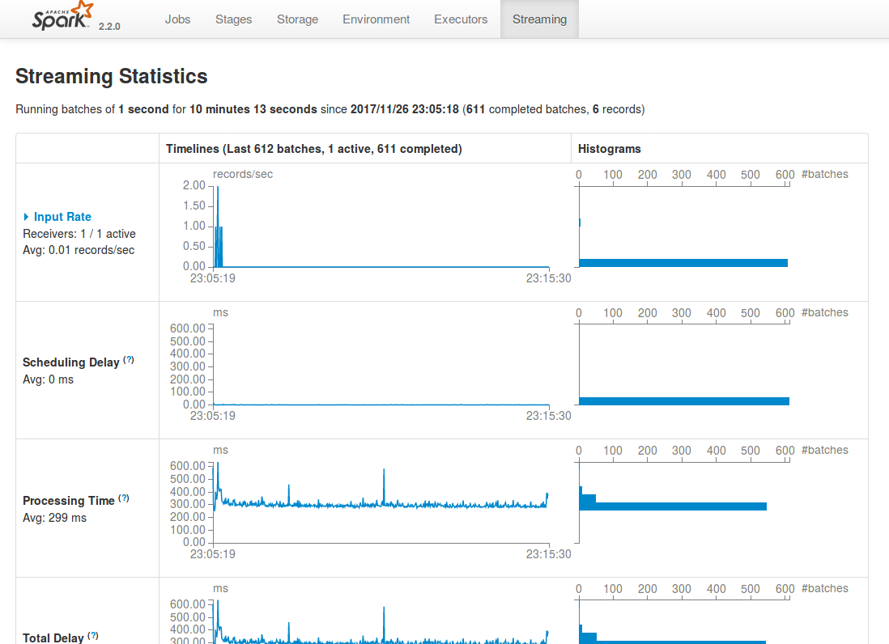

Calculs Distribués avec Apache Spark
Régis Behmo
regisb
CentraleSupelec, 6 novembre 2017
Apache Spark
| Hadoop | Spark |
|---|---|
| Java Virtual Machine (JVM) | |
| Write to disk (HDFS) | In-memory |
| Native data structures | Resilient Distributed Datasets (RDD) |
| Java (+ Hadoop streaming) | Java + Scala + Python + R |
| - | Python + Scala shell |
| Pluggable SQL (Hive) | Spark SQL (native) |
| Pluggable ML | Spark ML (native) |
Installation
- Java Runtime Environment (JRE)
$ sudo apt-get install default-jre $ java -version openjdk version "1.8.0_131" OpenJDK Runtime Environment (build 1.8.0_131-8u131-b11-2ubuntu1.16.04.3-b11) OpenJDK 64-Bit Server VM (build 25.131-b11, mixed mode) - Python 3
$ sudo apt-get install python3 - Spark download (2.2.0 pre-built for Hadoop 2.7)
$ wget http://apache.crihan.fr/dist/spark/spark-2.2.0/spark-2.2.0-bin-hadoop2.7.tgz $ tar xzf spark-2.2.0-bin-hadoop2.7.tgz
Installation (from VM)
- Go to Google Drive/Spark
- Download bigbox.7z (7.1 Gb)
- Uncompress with 7zip
- Import Bigbox.ovf file in Virtualbox
Data download
$ cd ~/work/$ wget http://classics.mit.edu/Homer/iliad.mb.txt
$ wget http://classics.mit.edu/Homer/odyssey.mb.txtPython Shell
$ cd ~/work/spark-2.2.0-bin-hadoop2.7/$ ./bin/pyspark
Python 2.7.12 (default, Nov 19 2016, 06:48:10)
>>>Python 3 Shell
$ PYSPARK_PYTHON=python3 ./bin/pyspark
Python 3.5.2 (default, Sep 14 2017, 22:51:06)
>>>iPython Shell
$ pip install --user ipython==5.5.0$ PYSPARK_PYTHON=ipython ./bin/pyspark
Python 2.7.12 (default, Nov 19 2016, 06:48:10)
In [1]: iPython 3 Shell
$ pip3 install --user ipython$ PYSPARK_PYTHON=ipython3 ./bin/pyspark
Python 3.5.2 (default, Sep 14 2017, 22:51:06)
In [1]: Your first resilient distributed dataset (RDD)
>>> rdd = sc.parallelize(range(0, 10))>>> rdd.collect()
[0, 1, 2, 3, 4, 5, 6, 7, 8, 9]>>> rdd.count()
10>>> rdd.first()
0>>> rdd.map(lambda x: x*x).collect()
[0, 1, 4, 9, 16, 25, 36, 49, 64, 81]Wordcount! \o/
>>> rdd = sc.textFile("iliad.mb.txt")>>> rdd.flatMap(lambda sentence: sentence.split())\
.map(lambda word: (word, 1))\
.reduceByKey(lambda v1, v2: v1 + v2)\
.sortBy(lambda wc: -wc[1])\
.take(10)[('the', 9573), ('and', 6481), ('of', 5584), ('to', 3291), ('his', 2487), ('he', 2448), ('in', 2184), ('a', 1789), ('with', 1593), ('that', 1434)]Documentation
https://spark.apache.org/docs/latest/rdd-programming-guide.htmlRDD operations
| Transformations | Actions |
|---|---|
| map, distinct, filter, reduceByKey, sortByKey, join... | reduce, collect, count, first, take... |
| Arguments: 1 or more RDD | |
| Returns: RDD | Returns: not an RDD |
| Lazy evaluation | Immediate evaluation |
| Sometimes shuffle | Shuffle necessary |
Directed Acyclic Graph (DAG)
Running a script
$ vim wordcount.pyfrom pyspark import SparkContext
sc = SparkContext()
rdd = sc.textFile("iliad.mb.txt")
result = rdd.flatMap(lambda sentence: sentence.split())\
.map(lambda word: (word, 1))\
.reduceByKey(lambda v1, v2: v1 + v2)\
.sortBy(lambda wc: -wc[1])\
.take(10)
print(result)
$ ./spark-2.2.0-bin-hadoop2.7/bin/spark-submit ./wordcount.pyAdvanced: Debugging with Spark UI
Pro tip: append this to your script
input("Access http://localhost:4040 to debug. Then press ctrl+c to exit")Pro tip: reduce Spark logging level
$ cd spark-2.2.0-bin-hadoop2.7/conf/
$ cp log4j.properties.template log4j.properties
$ vim log4j.properties
...
log4j.rootCategory=ERROR, console
...TODO (starter)
- Print the top 10 most frequent words with their probability of appearance
- Get rid of special characters (.,:!?')
- Identify the transformations and the actions in your script
- How many times are the transformations evaluated? (Hint: it depends)
- Can you reduce this number? (Hint: check out "persist")
TODO (intermediate)
- Print the top 10 words from the Iliad that have "most disappeared" in The Odyssey (Hint: you need to understand "join")
- Do the same by swapping the Iliad and The Odyssey
- Improve your script by getting rid of stopwords:
from nltk.corpus import stopwords english_stop_words = stopwords.words("english") - Use the Spark UI (http://localhost:4040) to make your script faster
Calculs Distribués avec Apache Spark
Architectures distribuées et machine learning
Régis Behmo
regisb
CentraleSupelec, 20 novembre 2017
Part 1 homework
https://github.com/regisb/centralesupelec-2017/blob/master/homework/iliad_odyssey.py
Configuration: launch Spark cluster
Launch one master:
./sbin/start-master.sh --host 192.168.1.M --port 7077Launch multiple slaves:
./sbin/start-slave.sh --host 0.0.0.0 spark://192.168.1.M:7077(prefix with SPARK_NO_DAEMONIZE=1 to launch workers in the foreground)
Spark shell
./bin/pyspark --master spark://192.168.1.M:7077Launching jobs
./bin/spark-submit --master spark://192.168.1.M:7077 myscript.pyConfiguration: resource allocation
Slave:
./sbin/start-slave.sh --host 0.0.0.0 --cores 2 --memory 512m spark://192.168.1.M:7077Configuration: resource allocation
Spark shell:
./bin/pyspark --master spark://192.168.1.M:7077 \
--total-executor-cores 2 --executor-memory 512mSpark script:
./bin/spark-submit --master spark://192.168.1.M:7077 \
--total-executor-cores 2 --executor-memory 512m myscript.pyConfiguration: resource allocation
Application (optional):
from pyspark import SparkConf
conf = SparkConf()
conf.set("spark.cores.max", 2)
conf.set("spark.executor.memory", "512m")
sc = SparkContext(conf=conf)Data loading
sc.textFile("/home/student/work/iliad.mb.txt")sc.textFile("hdfs://192.168.1.101:9000/data/iliad.mb.txt")
sc.textFile("hdfs://192.168.1.101:9000/data/blogs/raw.txt")
sc.textFile("hdfs://192.168.1.101:9000/data/blogs/raw1000.txt")Data loading
$ ./bin/hdfs dfs -fs hdfs://192.168.1.101:9000 -ls /data
drwxr-xr-x - regis supergroup 0 2017-11-18 20:44 /data/blogs
-rw-r--r-- 3 regis supergroup 691239883 2017-11-19 09:11 /data/enwik9-text
-rw-r--r-- 3 regis supergroup 808298 2017-11-18 22:28 /data/iliad.mb.txt$ ./bin/hdfs dfs -fs hdfs://192.168.1.101.1:9000 -copyToLocal /data/enwik9-text .Spark cluster
HDFS cluster
Configuration: HDFS
Launch one namenode:
./bin/hdfs namenode -fs hdfs://192.168.1.N:9000Launch multiple datanodes:
./bin/hdfs datanode -fs hdfs://192.168.1.N:9000Local configuration
Wifi SSID: "Spark CentraleSupelec" (No password)
Obtain your IP address: ifconfig (I'm at 192.168.1.101)
Virtualbox:
- Adjust your RAM/CPU
- Check network settings: "Bridged Adapter" → "wlan0"
DEBUG
- http://localhost:8080 = Spark master UI
- http://localhost:4040 = Spark application UI
- http://localhost:50070 = HDFS namenode UI
TODO (warmup)
- Create a cluster of 4-6 Spark nodes
- If possible, launch a couple HDFS datanodes
- Launch wordcount.py on
hdfs://192.168.1.101:9000/data/iliad.mb.txt - Launch wordcount.py on
hdfs://192.168.1.101:9000/data/blogs/raw.txt - Launch two jobs at the same time. Make them run at the same time (Hint: check resource allocation)
- What happens when a Spark node is brutally shutdown?
TODO (intermediate)
- What is Word2Vec?
- Create a Word2Vec model of the Iliad (Hint: it's better to have each paragraph on a single line, see
hdfs://192.168.1.101:9000/data/iliad.oneline.txt) - Who is Achilles + (Priam - Hector)?
Calculs Distribués avec Apache Spark
Traitement de données temps réel
Régis Behmo
regisb
CentraleSupelec, 27 novembre 2017
Part 2 homework
https://github.com/regisb/centralesupelec-2017/blob/master/homework/word2vec.py
from pyspark import SparkContext
from pyspark.mllib.feature import Word2Vec
sc = SparkContext()
rdd = sc.textFile("hdfs://192.168.1.101:9000/data/iliad.oneline.txt")\
.map(lambda line: line.strip().split())\
.map(lambda words: [w.strip(",.:;'\"-?!") for w in words])\
.map(lambda words: [w for w in words if w]).filter(lambda s: s)
model = Word2Vec().setSeed(1).setVectorSize(200).fit(rdd)
vectors = model.getVectors()
def minus(vec1, vec2):
return [v1 - v2 for v1, v2 in zip(vec1, vec2)]
def plus(vec1, vec2):
return [v1 + v2 for v1, v2 in zip(vec1, vec2)]
synonyms = model.findSynonyms(plus(
minus(vectors["Priam"], vectors["Hector"]),
vectors["Achilles"]), 10)
print(list(synonyms))Priam - Hector + Achilles
(Peleus is to Achilles what Priam is to Hector)
[('Priam', 0.94304829835891724),
('Atreus', 0.88183891773223877),
('Saturn', 0.87939071655273438),
('Peleus', 0.87464809417724609),
('Telamon', 0.86552971601486206),
('Laertes', 0.8487703800201416),
('Nestor', 0.83410191535949707),
('noble', 0.81868565082550049),
('Agamemnon', 0.81820404529571533),
('Gerene', 0.81664806604385376)]Wordcount \o/ (streaming edition)
Every 1s, print most frequent words
from pyspark import SparkContext
from pyspark.streaming import StreamingContext
sc = SparkContext()
ssc = StreamingContext(sc, 1)
ssc.checkpoint("./checkpoint")
def count_words(counts, current_count):
if current_count is None:
current_count = 0
return current_count + sum(counts)
ssc.socketTextStream("localhost", 9999)\
.flatMap(lambda line: line.split()).map(lambda word: (word, 1))\
.updateStateByKey(count_words)\
.transform(lambda rdd: rdd.sortBy(lambda wc: -wc[1]))\
.foreachRDD(lambda rdd: print(rdd.take(10)))
ssc.start()
ssc.awaitTermination()DStreams
DStream = "Discretized stream" = Sequence of RDDs
DStreams
DStream = "Discretized stream" = Sequence of RDDs
Your first Spark Streaming app
Make sure checkpoint directory exists
Launch convenient TCP server: nc -lk 9999
Windowing
"Every 2s, aggregate data that arrived during the past 3s"
.reduceByKeyAndWindow(func, func_inv, 3, 2)
Wordcount \o/ (sliding window edition)
Every 1s, print words that were most frequent during the last 5s
from pyspark import SparkContext
from pyspark.streaming import StreamingContext
sc = SparkContext()
ssc = StreamingContext(sc, 1)
ssc.checkpoint("./checkpoint")
ssc.socketTextStream("localhost", 9999)\
.flatMap(lambda line: line.split())\
.map(lambda word: (word, 1))\
.reduceByKeyAndWindow(lambda c1, c2: c1+c2, None, 5, 1)\
.transform(lambda rdd: rdd.sortBy(lambda wc: -wc[1]))\
.foreachRDD(lambda rdd: print(rdd.take(10)))
ssc.start()
ssc.awaitTermination()Spark UI - streaming tab
Bikes!
(data courtesy of https://developer.jcdecaux.com/)
{
"number":10120,
"name":"10120 - SALENGRO / DESCARTES",
"address":"41 AV. ROGER SALENGRO (VILLEURBANNE)",
"position":{"lat":45.7759505002626,"lng":4.87143421497628},
"banking":true,
"bonus":false,
"status":"OPEN",
"contract_name":"Lyon",
"bike_stands":15,
"available_bike_stands":6,
"available_bikes":9,
"last_update":1511735128000
}
How to start...
import json
from pyspark import SparkContext
from pyspark.streaming import StreamingContext
sc = SparkContext()
ssc = StreamingContext(sc, 5)
stream = ssc.socketTextStream("velib.behmo.com", 9999)
stations = stream.map(lambda station: json.loads(station))\
.map(lambda station: (
station['contract_name'] + ' ' + station['name'],
station['available_bikes']
))\
.pprint()
ssc.checkpoint("./checkpoint")
ssc.start()
ssc.awaitTermination()
TODO
- Create a Spark Streaming app that reads Velib data from velib.behmo.com (port 9999)
- Every 5s: print the empty Velib stations
- Every 5s: print the Velib stations that have become empty
- Every 1 min: print the stations that were most active during the last 5 min (activity = number of bikes borrowed and returned)
Questions?
Slides: https://regisb.github.io/centralesupelec-2017
Going further
Cours Openclassrooms : Réalisez des calculs distribués sur des données massives (Behmo & Hudelot)